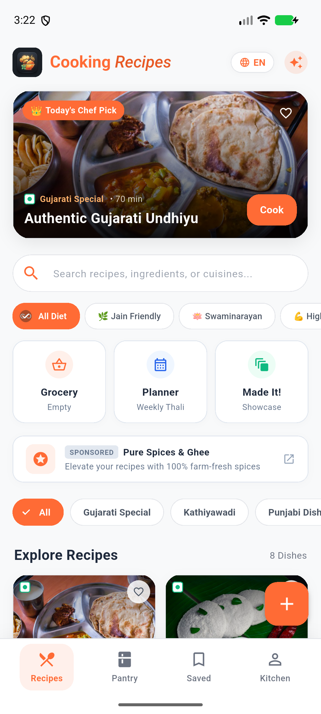

સ્વાદિષ્ટ ઘરની રસોઈ હવે તમારા ખિસ્સામાં.
૧૦૦+ અસલ કાઠિયાવાડી, ગુજરાતી અને પંજાબી વાનગીઓ. સ્માર્ટ પેન્ટ્રી શેફથી ઘરમાં પડેલા શાકમાંથી રેસિપિ શોધો, અઠવાડિક થાળી પ્લાન કરો અને બોલીને સમજાવતા કુકિંગ ટાઈમર સાથે રસોઈ બનાવો!
Download Cooking Recipes Application
કોઈપણ એન્ડ્રોઇડ સ્માર્ટફોન (Android 8.0 થી લઈને લેટેસ્ટ Android 16) પર સીધી ઇન્સ્ટોલ કરો. ૧૦૦% સેફ, ફાસ્ટ અને સંપૂર્ણ પ્રાઇવસી-ફ્રેન્ડલી.
તમારા મોબાઈલ કેમેરાથી સ્કેન કરી સીધી APK ડાઉનલોડ કરો
એપના ખાસ ફીચર્સ & સ્માર્ટ રસોઈ સાધનો
નીચેના ટેબ્સ પર ક્લિક કરીને જુઓ કે Cooking Recipes એપ તમારા રોજિંદા રસોઈના અનુભવને કેવી રીતે એકદમ સરળ અને સ્વાદિષ્ટ બનાવે છે:
કાઠિયાવાડી, ગુજરાતી, પંજાબી, ફરસાણ અને મીઠાઈનો ખજાનો
અસલ સુરતી ઊંધિયું, સેવ ટામેટાંનું શાક, રિંગણાનો ઓળો, દાળ ઢોકળી, હાંડવો, પનીર બટર મસાલા અને મોહનથાળ જેવી પરંપરાગત વાનગીઓનું સંપૂર્ણ સ્ટેપ-બાય-સ્ટેપ માર્ગદર્શન.
નો-ડુંગળી, નો-લસણ અને ફરાળી વાનગીઓ ફક્ત ૧ ક્લિકમાં અલગ તારવો.
દરેક સ્ટેપ સરળ ગુજરાતીમાં સમજાવેલું છે જેથી નવા શીખનારા પણ આસાનીથી બનાવી શકે.
ગમતી રેસિપિ સેવ કરી રાખો અને ઇન્ટરનેટ વગર ગમે ત્યારે રસોડામાં જુઓ.
કોઈપણ રેસિપિ સંપૂર્ણ સામગ્રી સાથે સીધી ફેમિલી ગ્રુપ્સમાં મોકલો.

૧૦૦% ગેસ્ટ મોડ (ઝીરો રજીસ્ટ્રેશન)
કોઈપણ પ્રકારના ફોન નંબર કે ઈમેલ આપ્યા વગર સીધી એપ ખોલો. તમામ ડેટા તમારા પોતાના ફોનમાં જ સુરક્ષિત રહે છે. ૧૦૦% ઓફલાઇન સપોર્ટ.
ગુગલ સાઇન-ઇન (ઓપ્શનલ સિંક)
જો તમે તમારા મનપસંદ વાનગીઓના લિસ્ટ અને મીલ પ્લાનને અન્ય ફોન કે પરિવાર સાથે સાચવી રાખવા માંગતા હોવ તો ૧-ટૅપ Google Sign-In કરી શકો છો.
ફોનમાં એપ કેવી રીતે ઇન્સ્ટોલ કરવી?
ઉપર આપેલા "Download APK" બટન પર ક્લિક કરો અથવા QR કોડ સ્કેન કરો. જો બ્રાઉઝર "File might be harmful" પૂછે તો "Download anyway" દબાવો.
ડાઉનલોડ થયેલી ફાઇલ પર ક્લિક કરી Install દબાવો. જો ફોનમાં પૂછવામાં આવે તો "Allow from this source" ચાલુ કરો.
એપ ઓપન કરો, ભાષામાં ગુજરાતી સિલેક્ટ કરો અને ઘરમાં જ બનાવો હોટલ અને ઢાબા જેવો સ્વાદિષ્ટ ખોરાક!
વારંવાર પૂછાતા પ્રશ્નો (FAQ)
હા, Cooking Recipes એપ વાપરવા માટે ૧૦૦% મફત છે. કોઈ છુપા ચાર્જીસ નથી.
ચોક્કસ! તમે સેવ કરેલી ફેવરિટ રેસિપિ અને સ્માર્ટ પેન્ટ્રી શેફ ઑફલાઇન પણ કામ કરે છે.
હા, આ APK MInfosoftware ની ઓફિશિયલ રિલીઝ કી વડે સાઇન થયેલી છે અને Google Play Protect ના તમામ સેફ્ટી ધોરણો પાસ કરે છે.
હા, હોમ સ્ક્રીન પર 'જૈન' અને 'સ્વામિનારાયણ' ફિલ્ટર આપેલું છે જે નો-લસણ, નો-ડુંગળી વાળી વાનગીઓ બતાવે છે.